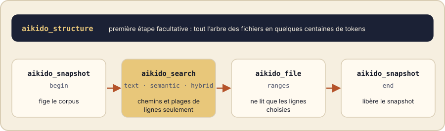

Un assistant arrive dans un projet inconnu et doit choisir où regarder. Sans mot-clé évident, la carte lui sert de premier repère.
L’idée en une image
Kimono 0.9.6 ajoute aikido_structure, un outil en lecture seule qui renvoie l’arbre de fichiers de votre snapshot, selon les mêmes règles d’exclusion que le reste de Kimono. Chaque fichier porte un type et un indicateur idx qui dit si Kimono l’indexe : l’assistant voit tout de suite ce qu’une recherche peut atteindre et ce qu’elle ne peut pas.

Ce que vous demandez à votre assistant
Dans VS Code, vous ouvrez le chat de votre assistant avec Kimono connecté et vous écrivez, comme à un collègue :
Montre-moi la forme de ce projet, limitée au dossier src. Puis dis-moi quels fichiers Kimono n’indexe pas.L’assistant répond en quelques secondes, sans avoir ouvert un seul fichier. Il vous montre d’abord src : un dossier api/ et un fichier index.ts. Il précise ensuite que deux fichiers échappent à la recherche : un fichier d’exclusion (.gitignore) et une image (logo.png). Vous savez déjà ce qu’une recherche pourra trouver, et ce qu’elle ne trouvera jamais.
Vous poursuivez : « Donne-moi tout l’arbre, en format compact ». Voici ce qui s’affiche, douze lignes pour tout le projet :
.gitignore ignore 0 14
Dockerfile docker 1 13
README.md readme 1 32
assets/
logo.png image 0 5
docs/
architecture.md md 1 37
package.json manifest 1 16
src/
api/
ping.ts ts 1 34
index.ts ts 1 31Sous le capot
Derrière votre question sur les fichiers non indexés, l’assistant a appelé aikido_structure avec idx: 0. Voici la réponse brute qu’il a reçue :
{"v":"a0de78c5…","n":2,"idx":0,
"data":{".gitignore":["ignore",0,14],"assets/":{"logo.png":["image",0,5]}}}- 8fichiers dans le projet d’exemple
- 6indexés ; 2 ne le sont pas (un fichier d’exclusion et une image)
- 12lignes pour l’arbre complet en texte
La réponse porte aussi un marqueur de version v. Renvoyez-le en since : si rien n’a changé, l’outil répond {"unchanged":true} au lieu de renvoyer l’arbre.